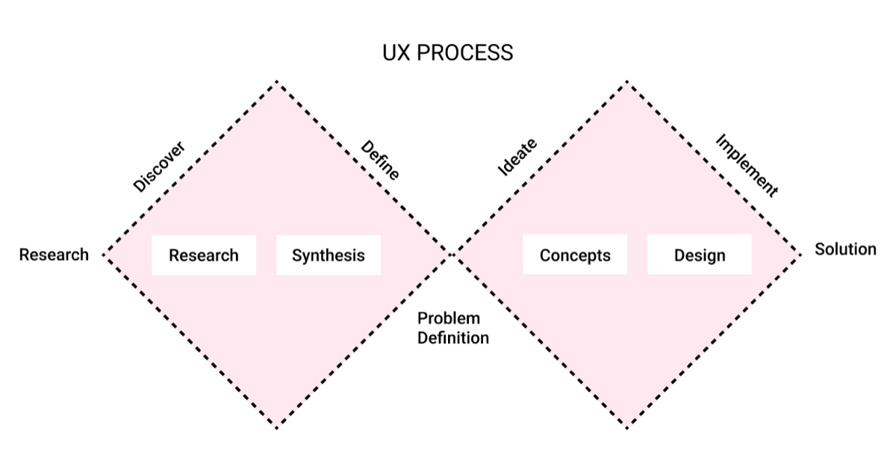
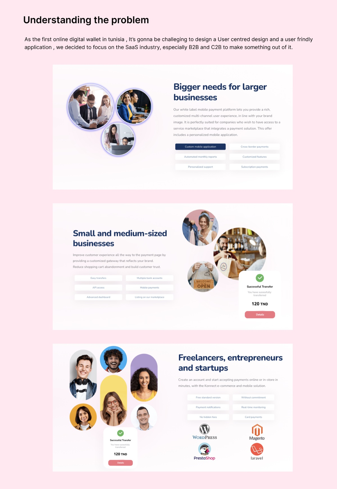
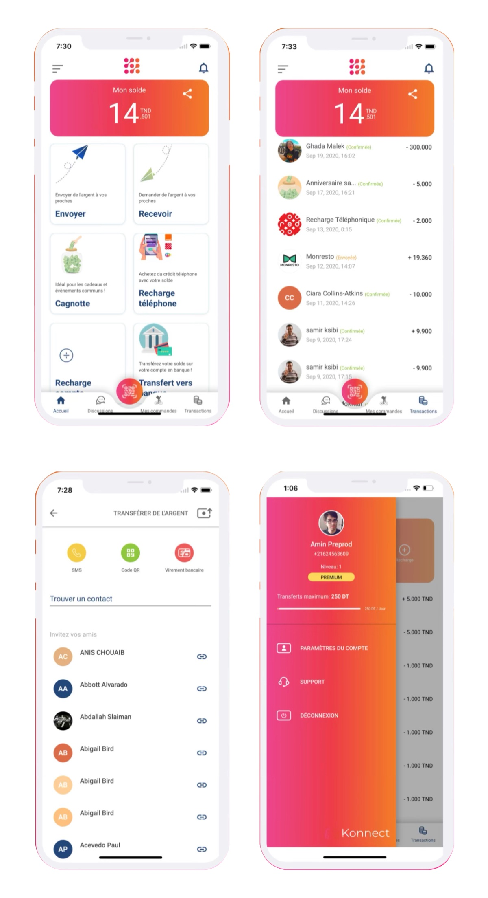

01 Intro
During my 1-year tenure as a UI/UX designer at T-ledger, a fintech startup, I had the opportunity to work on a project called Konnect. Throughout this period, we undertook the entire design process, identified the current problems, and completely redesigned the application.
We also engaged in back-and-forth brainstorming sessions with the CTO to reach the final functional product. I worked across UX design, UI design, prototyping, and product strategy, using Figma and Jira.
02 The problem
Back in 2020, Tunisia faced a significant problem with online payments. Konnect emerged as the solution to this issue. Users can now have a digital wallet that enables them to make online payments in Tunisia.
Additionally, Konnect offers features such as sending and receiving money through bank transfers, buying phone credits, and connecting to the user's bank account via bank transfer. All of these features are highly secure, thanks to the use of blockchain technology.
03 Presentation
Konnect Networks is a pioneer in the payment industry in Tunisia. It helps businesses of all sizes to grow and develop by using different payment methods. With the help of a simple and clear payment solution, Konnect Networks can offer multiple payment methods in a simple and intuitive way.
Konnect Networks' mission is to become the most appreciated PSP in Tunisia by simplifying complex financial flows. Konnect Networks currently has nearly 2,000 users in Tunisia.
04 The outcome


05 Validating the design
Design validation is crucial to ensure the final product meets criteria and expectations. The steps I followed:
- Define objectives clearly.
- Involve stakeholders from the start.
- Hold regular design reviews for feedback.
- Use visual aids like prototypes.
- Gather remote feedback through tools.
- Encourage constructive criticism.
- Conduct user usability testing.
- Document decisions and changes.
- Address conflicts professionally.
- Iterate and refine based on feedback.

06 Verdict
I had a lot of fun working on Konnect! The CTO was a big help and someone you look up to — he was full of ideas and we were able to get a lot done in every collaboration.
I am extremely happy that the team still uses my design to this day. We could see many positive effects on the product's development and on its consistency.